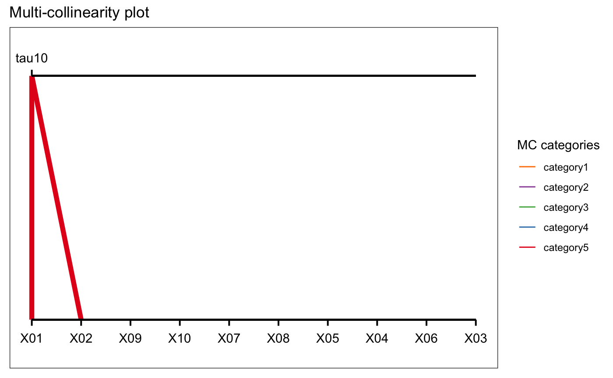
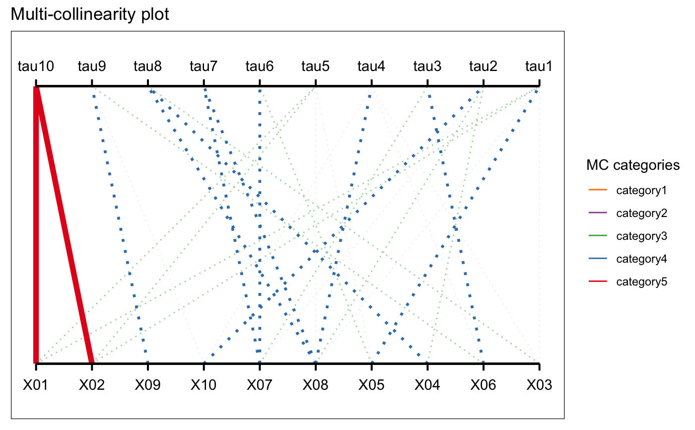

ggplot.mcvis.RdThe ggplot_mcvis function first orders the MC-index matrix columns by the magnitude of the MC-index for the tau1, which is the inverse of the smallest eigenvalue Under this ordering, the first entry of the matrix is classified as a "category 5" thickness in plotting Subsequently, other lines are sequentially put in the categories of
category 5: 0.5 or above
category 4: 0.3 - 0.5
category 3: 0.2 - 0.3
category 2: 0.1 - 0.2
category 1: 0.0 - 0.1
# S3 method for mcvis ggplot(x, eig_max = 1L, var_max = ncol(x$MC))
| x | Output of the mcvis function |
|---|---|
| eig_max | The maximum number of eigenvalues to be displayed on the plot. |
| var_max | The maximum number of variables (i.e. columns) to be displayed on the plot. |
A ggplot
library(ggplot2) set.seed(1) p = 10 n = 100 X = matrix(rnorm(n*p, 0, 5), ncol = p) X[,1] = X[,2] + rnorm(n, 0, 0.1) mcvis_result = mcvis(X) ggplot(mcvis_result)